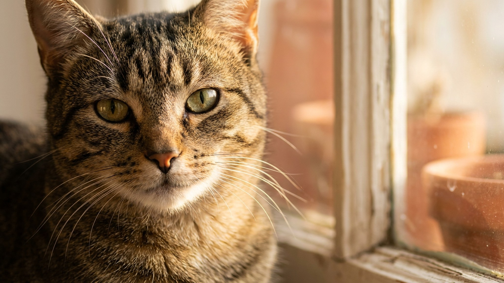

Вы приходите домой, ставите пакеты на пол, и кошка тут же трётся мордочкой о пакеты, потом об угол тумбы, потом о ваши ноги. Это выглядит как ласка, но за этим стоит кое-что конкретнее. На щеках, подбородке и лбу кошки расположены железы, которые выделяют феромоны. Трением кошка оставляет свой запах: «это моё, это знакомо, здесь безопасно». Разбираем, что это поведение означает, почему оно усиливается в стрессовых ситуациях и что хозяину точно не стоит делать.
🐾 У вашей кошки так же?
Расскажите в AnimaLife, как ведёт себя ваш питомец, — приложение объяснит причину и даст пошаговый план. Бесплатно, без записи к специалисту.
Разобрать свой случай → Разобрать в MAX →
У вас iPhone? AnimaLife есть в App Store
У кошки несколько групп желез, расположенных на морде: у уголков губ, на подбородке, у висков и вдоль лба. Когда она трётся об угол шкафа или о ваше колено, она буквально наносит феромонный след. Этот след держится несколько часов, иногда дольше: зависит от поверхности и влажности воздуха.
Феромоны, которые откладывают лицевые железы, называют F3-фракцией. Кошачьи исследования показали: эти вещества сигнализируют «привычное и безопасное». Именно поэтому кошка трётся о предметы в своём доме регулярно: обновляет карту знакомых запахов. Пропало ли ощущение «своего» - наносит заново.
Многие владельцы путают два совершенно разных процесса. Метка мочой: тревожный сигнал. Кошка прибегает к ней при сильном стрессе, конкуренции с другим животным или нерешённой проблеме со здоровьем. Это нежелательное поведение, которое требует внимания.
Натирание щекой - противоположная история. Это признак того, что кошка чувствует себя на своей территории и в безопасности. Угол шкафа, ножка стула, ваши джинсы - всё это входит в её «надёжный мир». Когда кошка трётся о вас, она буквально помечает вас как часть своей территории. Для большинства кошек это эквивалент доверия.
Принесли домой новый диван. Кошка обошла его несколько раз, затем начала активно тереться об каждый угол. Чистая работа, не странность. Незнакомый предмет пахнет магазином, транспортом, чужими руками. Кошке нужно перебить этот запах своим, чтобы диван вошёл в карту безопасного пространства.
То же происходит при переезде: первые 3-7 дней кошка может тереться буквально обо всё и активнее, чем обычно. Это самоуспокоение. Она восстанавливает привычную «ароматную карту» в новом месте. Помогают синтетические аналоги феромонов F3: диффузоры с ними доступны в зоомагазинах и снижают тревожность в первые дни после переезда.
Одна деталь стоит того, чтобы её запомнить. Если кошка трётся только одной стороной морды, явно избегает тереться другой стороной, или начала тереться мордой об пол, это повод обсудить с ветеринаром. Причиной могут быть дискомфорт в ухе, проблемы с зубами или кожей в этой зоне. Без осмотра угадывать не стоит.
Теперь про ошибку хозяев. После уборки многие протирают плинтусы, углы и ножки мебели хлорсодержащими средствами: резкий запах убивает феромоны. Для кошки это выглядит так, будто вся карта безопасного дома внезапно стёрлась. Ответ предсказуем: тревога и активное повторное нанесение запахов. Для обычной уборки достаточно воды или нейтрального средства без резкого запаха, углы трогать аккуратнее.
Два практичных шага, если вы хотите поддержать кошку:
🐾 Хотите понять, что кошка говорит вам?
Опишите ситуацию или пришлите видео в AnimaLife — AI разберёт поведение вашего питомца и подскажет, что делать. Бесплатно, ответ за минуту.
Разобрать поведение → Разобрать в MAX →
У вас iPhone? AnimaLife есть в App Store
🐾 Понравился разбор?
Подпишитесь на канал — каждый день разбираем по одному тревожному симптому у кошек и собак: что в пределах нормы, а когда пора к врачу. Подпишитесь, чтобы не пропустить разбор, который может спасти здоровье вашего питомца.